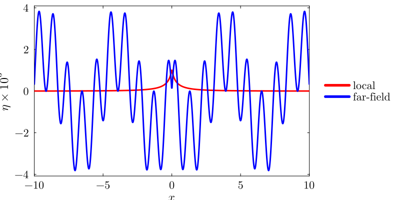
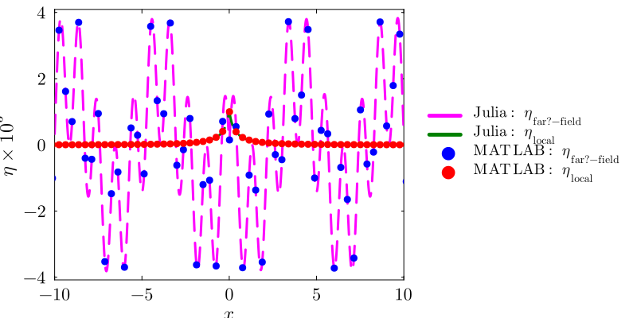
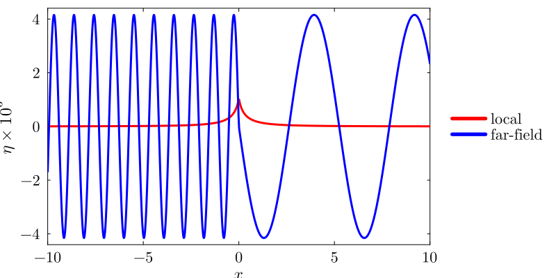
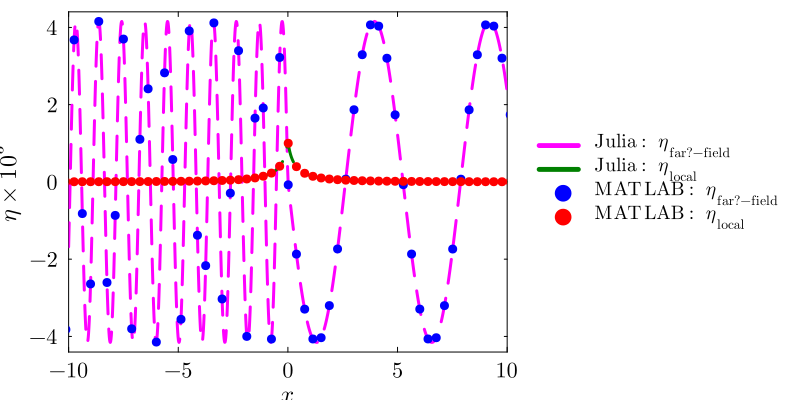

Steady-State Decomposition (Manuscript §3.4)
This page derives the steady-state interfacial response from the general Fourier integral solution, establishing the far-field sinusoidal waves and localised deformation that form the basis for both the pure-gravity and capillary-gravity treatments that follow.
Formal solution
A localised pressure $\tilde{p}_e = \tilde{F}_0\delta(\tilde{x})$ force is applied at the interface between two inviscid, incompressible, fluids of infinite depth, both streams moving at uniform speed $U$ rightwards. In the absence of this forcing, the interface is flat and remains at $\tilde{z}=0$. After non-dimensionalisation, the interfacial displacement resulting from the forcing i.e. $\eta(x,t)$ is obtained by evaluating the following time-dependent Fourier integrals (eqns. $3.7$ and $3.8$ in the manuscript)
\[\dfrac{\sqrt{2\pi}\;\bar{\eta}(k,t)}{F_0} = \left(\dfrac{1}{-\alpha|k|^2 + \left(1+\rho_r\right)|k| - \left(1-\rho_r\right)}\right) - \dfrac{1}{\alpha |k|^2 + \left(1 - \rho_r\right)} \left(\dfrac{k}{2}\right) \Bigg( \dfrac{\exp\left[-it\lambda_2(k)\right]}{\lambda_2(k)} + \dfrac{\exp\left[-it\lambda_1(k)\right]}{\lambda_1(k)} \Bigg) \tag{3.7}\]
The inverse Fourier integral, leads to the (non-dimensional) interface displacement as a function of time:
\[\eta(x,t) = \dfrac{1}{\sqrt{2\pi}}\int_{-\infty}^{\infty}dk\;\exp\left(ikx\right)\bar{\eta}(k,t) \tag{3.8}\]
where $\lambda_{1,2}(k) \equiv k\mp\sqrt{\dfrac{\alpha|k|^3}{1+\rho_r}\;+\;\beta|k|}$ and
\[\alpha = \frac{gT}{\rho_l U^4}, \quad \rho_r = \frac{\rho_u}{\rho_l}, \quad \beta = \frac{1-\rho_r}{1+\rho_r}.\]
Steady-state decomposition
In this section, the manuscript shows that neglecting the time-dependent terms in eqns. (3.7) and (3.8) and $\textit{without}$ using any Rayleigh dissipation, the steady-state response turns out to be (we exclude all the Dirac delta function terms in eqn. $3.9$ in the manuscript) the following. For proof of this, see Steady-state proof.
\[\dfrac{\eta_{s}(x)}{F_0} =\dfrac{ \eta^{\text{far-field}}_{s}(x)}{F_0} + \dfrac{\eta^{\text{local}}_{s}(x)}{F_0} \tag{3.11}\]
where ,
\[\dfrac{\eta^{\text{far-field}}_{s}(x)}{F_0} \equiv \dfrac{1}{\alpha(k_l-k_s)}\bigg\{-\sin(k_s|x|)\quad + \quad \sin(k_l|x|)\bigg\}\]
\[\dfrac{\eta^{\text{local}}_{s}(x)}{F_0} \equiv \dfrac{\left(k_l+k_s\right)}{\pi\alpha}\int_{0}^{\infty}dy \dfrac{y\exp\left(-|x|y\right)}{\left(y^2 + k_l^2\right)\left(y^2+k_s^2\right)},\quad x\neq 0,\]
\[k_{l,s} = \frac{1+\rho_r}{2\alpha}\left[1\pm\sqrt{1-\frac{4\alpha\beta}{1+\rho_r}}\right].\]
The integral expression for $\frac{\eta^{\text{local}}_{s}(x)}{F_0}$ above is solved numerically (in Julia and MATLAB) using the following codes. The Julia side uses compute_cg_parameters for the nondimensional parameters and solve with steady for the decomposition into far-field and local components.
using ForcedInterfacialWaves
using Plots, LaTeXStrings
p = compute_cg_parameters()
x = make_cg_xgrid(p; Nx=2001, xlim=(-15.0, 15.0))
# Steady solution without Rayleigh dissipation
sol = solve(ForcedGCProblem(p, x); method=steady(rayleigh_dissipation=false))
plot(x, sol.η_s_local .* 1e3; label="local", color="red",
guidefontsize=16, tickfontsize=14, legendfontsize=14,
xlabel=L"x", ylabel=L"\eta \times 10^{3}", xlims=(-10,10),
legend=:outerright, size=(800,400))
plot!(x, sol.η_s_farfield .* 1e3; label="far-field", color="blue")
Fig. 5a: Steady-state far-field and local components without Rayleigh dissipation.
%% Steady-state decomposition (no Rayleigh dissipation)
U = 26.7046; g = 981.0; T = 72.0;
rho_l = 1.0; rho_u = 0.001;
l_c = U^2 / g;
alpha = T / (rho_l * U^2 * l_c);
rho_r = rho_u / rho_l;
disc = (1 + rho_r)^2 - 4*alpha*(1 - rho_r);
k_l = ((1 + rho_r) + sqrt(disc)) / (2*alpha);
k_s = ((1 + rho_r) - sqrt(disc)) / (2*alpha);
F0 = 0.01*T / (rho_l*U^2*l_c);
x = linspace(-15, 15, 2001);
x(abs(x) < 1e-12) = [];
eta_far = F0/(alpha*(k_l - k_s)) .* (-sin(k_s*abs(x)) + sin(k_l*abs(x)));
eta_local = zeros(size(x));
for i = 1:length(x)
eta_local(i) = F0*(k_l + k_s)/(pi*alpha) * ...
integral(@(y) y.*exp(-abs(x(i)).*y)./((y.^2+k_l^2).*(y.^2+k_s^2)), ...
0, Inf, 'AbsTol', 1e-10, 'RelTol', 1e-8);
end
figure; hold on;
plot(x, eta_far*1e3, 'b-', 'LineWidth', 2);
plot(x, eta_local*1e3, 'r-', 'LineWidth', 2);
xlabel('x'); ylabel('\eta \times 10^3');
legend('far-field','local'); xlim([-10 10]);
The steady-state response $\eta(x)$ using the Rayleigh dissipation approach is obtained as:
\[\begin{aligned} \dfrac{\eta(x)}{F_0} &= -\dfrac{2}{\alpha\left(k_{l} - k_{s}\right)} \begin{cases} \sin(k_{l}x), & x<0\\ \sin(k_{s}x), & x>0 \end{cases} + \dfrac{G(x)}{\pi\alpha}, \\ \text{with}\quad G(x) &\equiv \dfrac{1}{k_{l}-k_{s}}\int_{0}^{\infty}\;dk\;\left(\dfrac{\cos(kx)}{k+k_{s}}-\dfrac{\cos(kx)}{k+k_{l}}\right). \end{aligned} \tag{3.12}\]
It is shown here that $\dfrac{G(x)}{\pi\alpha}$ in eqn. 3.12 is identical to $\dfrac{\eta_s^{\text{local}}(x)}{F_0}$ in eqn. 3.11; the latter expression being preferable compared to $G(x)$ in 3.12 due to the apparence of its local nature via the explicit exponential decay term. Fig. 5b confirms that the steady-state response from the Rayleigh dissipation approach is qualitatively different from that of fig. 5a. Notably, the response employing Rayleigh dissipation is asymmetric about $x=0$ (fig. 5b), consistent with observations. In the next sections, we show that similar results will be arrived at through the IVP approach.
The Rayleigh dissipation steady state is computed using the same solve interface with rayleigh_dissipation=true. The returned WaveSolution carries the same η_s_local and η_s_farfield fields.
# Steady solution with Rayleigh dissipation
sol_r = solve(ForcedGCProblem(p, x); method=steady(rayleigh_dissipation=true))
plot(x, sol_r.η_s_local .* 1e3; label="local", color="red",
guidefontsize=16, tickfontsize=14, legendfontsize=14,
xlabel=L"x", ylabel=L"\eta \times 10^{3}", xlims=(-10,10),
legend=:outerright, size=(800,400))
plot!(x, sol_r.η_s_farfield .* 1e3; label="far-field", color="blue")
Fig. 5b: Steady-state far-field and local components with Rayleigh dissipation. The asymmetric far-field response selects short waves upstream ($x<0$) and long waves downstream ($x>0$).
%% Steady-state with Rayleigh dissipation (eqn. 3.12)
% Far-field: asymmetric sinusoidal terms
eta_far_r = zeros(size(x));
eta_far_r(x < 0) = -2*F0/(alpha*(k_l - k_s)) .* sin(k_l*x(x < 0));
eta_far_r(x > 0) = -2*F0/(alpha*(k_l - k_s)) .* sin(k_s*x(x > 0));
% Local: G(x) integral (identical to eqn 3.11 local term)
eta_local_r = eta_local; % same local term as the non-Rayleigh case
figure; hold on;
plot(x, eta_far_r*1e3, 'b-', 'LineWidth', 2);
plot(x, eta_local_r*1e3, 'r-', 'LineWidth', 2);
xlabel('x'); ylabel('\eta \times 10^3');
legend('far-field','local'); xlim([-10 10]);
To regenerate these figures from source, run from the repository root:
# 1. Generate MATLAB CSV datasets
matlab -batch "run('matlab/generate_steady_state_comparison_data.m')"
# 2. Generate overlay PNGs
julia --project=scripts scripts/generate_steady_state_overlays.jl